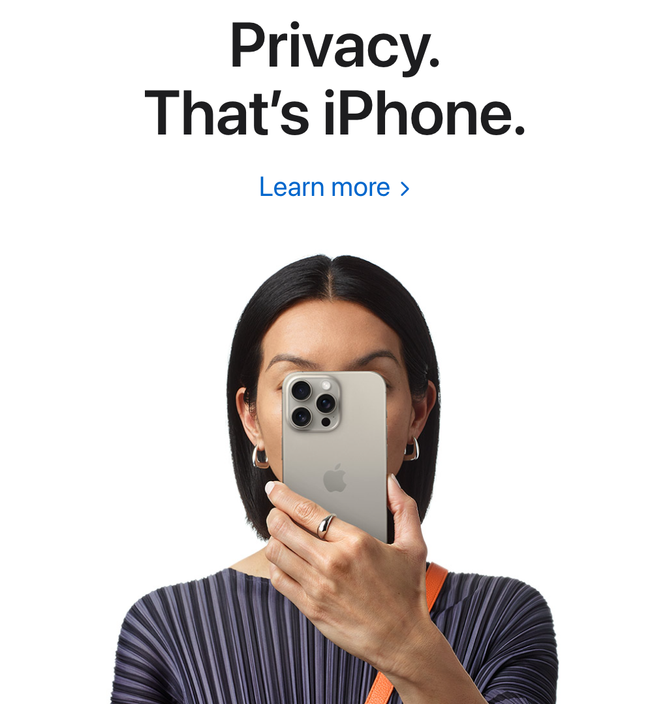
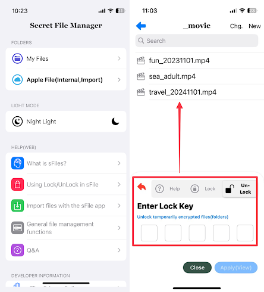
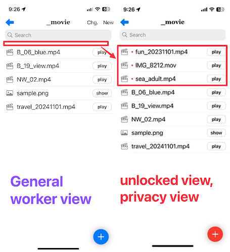

1. Of course, the primary access to the iPhone is handled by the iPhone. This smartphone provides the best security features of the iPhone.

2. sFiles is a secondary security approach that allows you to hide the currently stored files when you want to hide them, and view them when you want to see them.

3. The practical function of file encryption is to safely hide your phone from others.

4. If you inevitably access your smartphone and see the files you own, it could be a violation of your personal privacy
5. sFiles provides a secondary personal privacy protection function that the iPhone does not have, and is a simple but necessary function.
Have a nice day ~